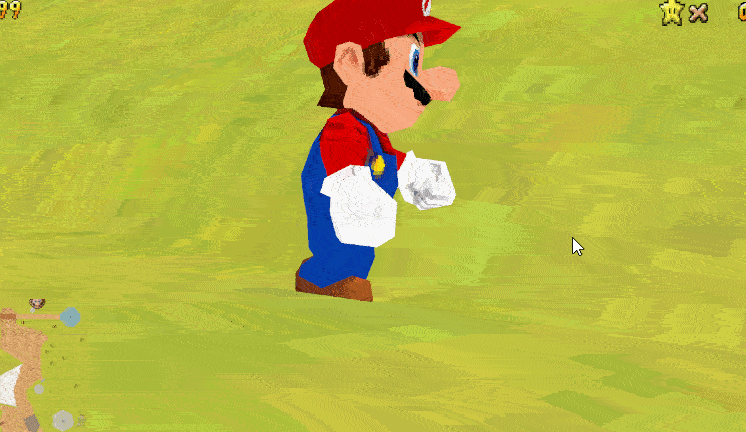
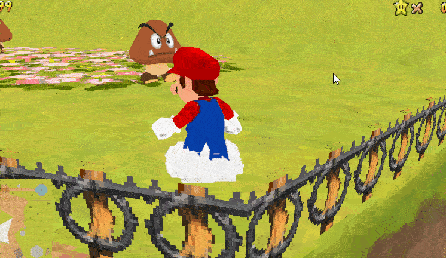

3D PLATFORMER · 2024.09 / 2026.02 — 03 · PM / 게임 총괄 제작
Super Mario 64 NDS
폭탄병의 전장을 Unity로 옮기면서 같은 각도의 경사에서도 마리오가 다르게 미끄러지는 이유를 추적했습니다.

담당 작업
걷기·가속·슬라이드·3단 점프 이동 시스템
접촉면 Normal을 활용한 벽과 지면 판별
상태 패턴 기반 굼바·폭탄병 행동 구현
코인·스타·VFX·SFX 등 스테이지 플레이 루프
구현 과정
입력과 물리 주기 분리
PlayerInput 콜백에서 입력을 저장하고 FixedUpdate 주기에 MoveDir로 반영해 Rigidbody 물리와 입력 처리 시점을 맞췄습니다.
표면 상태 판정
Contact Normal의 y값으로 벽과 지면을 구분하고, 충돌한 서브메시의 재질에서 미끄러짐 임계값을 가져와 Slide 진입 여부를 정했습니다.
이동 감각 구성
걷기가 유지되면 가속해 달리기로 전환하고 Physics Material의 마찰을 조절해 경사면 슬라이드를 만들었습니다. GroundCheck와 Slide 상태를 조합해 3단 점프 조건을 제한했습니다.
플레이 루프 완성
굼바와 폭탄병의 상태, Punch·Press·Boom 피격 타입, 코인과 스타를 연결했습니다. 일반·블루·레드 코인과 100코인 스타까지 원작의 목표 흐름을 재구성했습니다.
개발 중 해결한 문제
하나의 MeshCollider에서 벽과 바닥을 구분할 수 없음
폭탄병의 전쟁터 맵이 거대한 단일 콜라이더라 레이어 분리가 불가능했습니다. 접촉 법선의 수직 성분을 사용해 지면, 벽, 경사면을 런타임에 분류했습니다.
이동이 즉각 변해 원작의 관성이 사라짐
목표 속도를 바로 대입하지 않고 걷기 지속 시간을 기준으로 가속도를 누적했습니다. Slide에서는 별도의 마찰과 애니메이션 상태를 사용해 조작감의 연속성을 유지했습니다.
몬스터별 상태 코드가 반복됨
상태 전환과 Blackboard 데이터는 추상 계층으로 올리고, 순찰·추격은 Navigation 기반 공통 상태로 만들었습니다. 몬스터별 공격과 사망 반응만 독립 구현했습니다.
개발 자료


